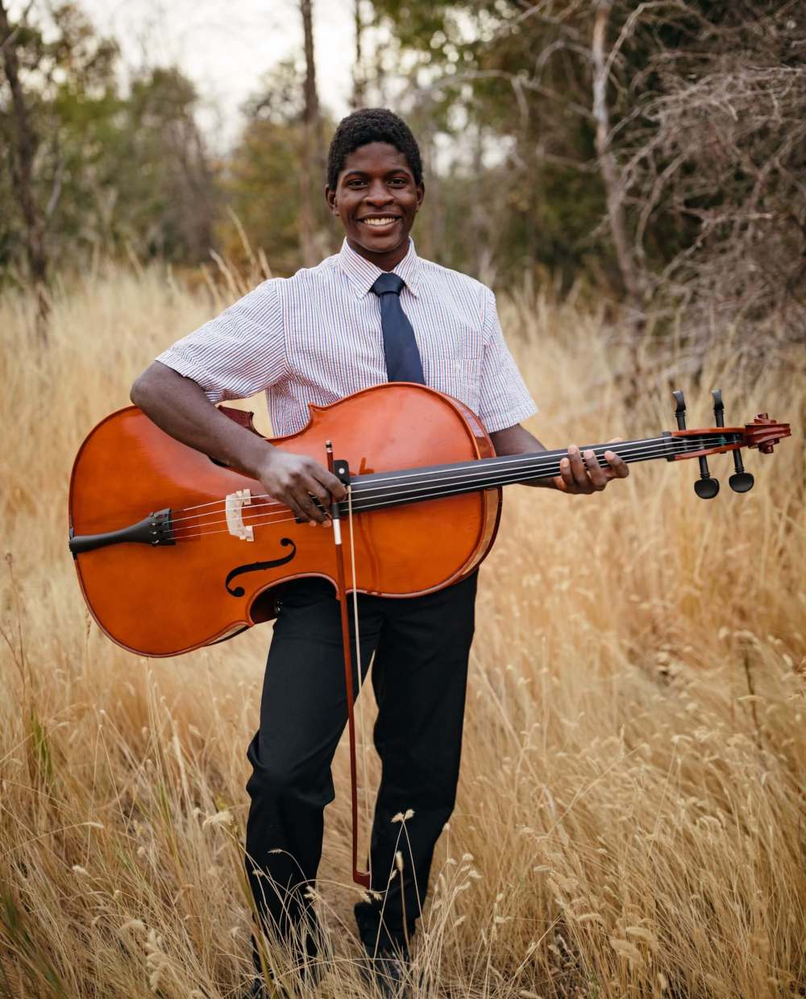

About Me
Welcome to my “About Me” page. On this page you will learn more about my personal life that helped me to become who I am today. I will explain a brief overview of my family and how that dynamic influenced my personal decisions growing up. Other stories such as hobbies and extra-curricular activities will be shared through various photos. With each photo I hope to share snippets of my life that better help the user to understand my backstory. These experiences have been an integral part of my life and I wouldn't change them. Through them I have been able to connect to others in ways that I would not have been able to before. My hope is that through the showing of fun, but meaningful photos you will gain a better visual understanding of these points in my life. If you would like to learn more about my everyday life, there will be links in the footer of this page to personal social media accounts such as Facebook, Instagram, and LinkedIn. There you will find updated information about me and my current lifestyle.
Family Life

I was born in Haiti, but was adopted at the age of four and raised in cache valley Utah. In my family I have three stepsisters and one stepbrother. On my mom's side of the family we love playing board games, camping, fishing, and cooking together. I have fond memories laughing with mother and making teasing each other around the house. As for my dads side of the family, we like to go pheasant hunting, watching movies, and enjoying large reunions together. I have enjoyed spending time with both families and learning how to have a good time with them. Despite having different families, each have been a huge support in my life and changed me into the person I am today.
Music
I have learned to appreciate a wide variety of music and play several instruments. I started to enjoy classical music more when I joined my school orchestra playing the cello. I was inspired to play the cello after watching the piano guys and having some high-school recruiters come play for us. I continued to play the cello through middle school until my high-school graduation. Other instruments I play include the piano and the ukulele. Through playing the piano and ukulele, I have learned the value of patience and working through failure to be successful. Music has been a huge blessing in my life and it has changed my outlook on life.
Being Active

I also have enjoyed being active growing up and have played a variety of sports. I started playing baseball around 10 years old and working with other people on my team during this sport. I have fond memories playing catch with my dad and having him support me through this sport. During high-school I participated in cross-country running 5k's around different parts of Utah. During the off-season I also was on my school track team. My events main events were javelin, the 100, and 800 meter dash. My favorite part of being on any team is the feeling of accomplishment after finishing a race or event knowing that you gave it your all. I know that despite the results I got, my team would always back me up and congratulate me.